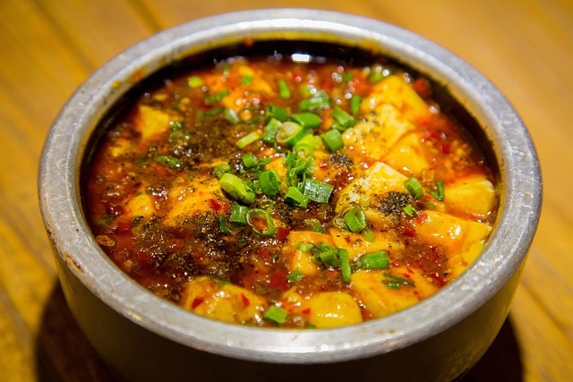

Mapo Tofu

A bold and flavorful classic from China's Sichuan province, Mapo Tofu is beloved
for its signature balance of heat and numbing spice. It is generally made with soft
tofu, ground pork or beef, fermented bean paste, garlic, and giner, and it gets its
distinctive kick from Sichuan peppercorns and chili oil.
Mapo Tofu is a staple of China's vibrant cuisine, often linked to the city of
Chengdu. It's quick to prepare yet packed with complex flavor, making it ideal for
special occasions and nightly dinners alike.
Ingredients
- 2 tablespoons Sichuan peppercorns, divided
- 1/4 cup vegetable oil
- 1 teaspoon cornstarch
- 2 teaspoons cold water
- 1 1/2 pounds medium to firm silken tofu, cut into 1.2 inch cubes
- 1/4 ground beef
- 3 garlic cloves grated
- 1 tablespoon fresh ginger grated
- 2 tablespoons chili bean paste
- 2 tablespoons Xiaoxing wine
- 1 tablespoon dark soy sauce
- 1/4 cup low sodium chicken stock
- 1/4 cup roasted chili oil
- 1/4 cup finely sliced scallion greens
Instructions
- Heat half of Sichuan peppercorns in a large wok over high heat until lightly smoking.
Transfer to a mortar and pestle. Pound until finely ground and set aside.
- Add remaining Sichuan peppercorns and vegetable oil to wok. Heat over medium high
heat until lightly sizzling, about 1 1/2 minutes. Pick up peppercorns with a
wire mesh skimmer and discard, leaving oil in pan.
- Combine cornstarch and cold water in a small bowl and mix with a fork until
homogenous. Bring a medium saucepan of water to a boil over high heat and
add tofu. Cook for 1 minute. Drain in a colander, being careful not to
break up the tofu.
- Heat oil in wok over high heat until smoking. Add beef and cook, stirring
constantly for 1 minute. Add garlic and ginger and cook until fragrant,
about 15 seconds. Add chili bean paste, wine, soy sauce, and chicken stock
and bring to a boil. Pour in cornstarch mixture and cook for 30 seconds until
thickened. Add tofu and carefully fold in, being careful not to break it up
too much. Stir in chili oil and half of scallions and simmer for 30 seconds
longer. Transfer immediately to a serving bowl and sprinkle with remaining
scallions and toasted ground Sichuan pepper. Serve immediately with white rice.
Home